School ERP
How to use every screen, step by step
📖 Read it as a book: https://saifullahafridi.github.io/SchoolERP_DOCS/ (every chapter on one page, with a chapter list on the side)
School ERP is a web app that runs the whole school in one place: admissions, attendance, fees, exams, payroll and a portal for parents. You open it in a browser (Chrome or Edge) on a computer or a mobile phone.
Many schools can use the same app. Each school sees only its own data. An owner with several branches can join them in a School Group and see all branches with one login.
Contents
- Start hereBefore you start
- Chapter 1Login and Dashboard
- Chapter 2Different Logins
- Chapter 3Students
- Chapter 4Attendance and Holidays
- Chapter 5Fees
- Chapter 6Exams, Timetable, Homework, Certificates and Promotion
- Chapter 7Staff, Payroll and Expenses
- Chapter 8School Groups (Branches) and Transfers
- Chapter 9Parent Portal
- Chapter 10Users, Audit Log, School Setup and Common Questions
Before you start
Who can do what (Roles)
| Role | What they can do |
|---|---|
| Admin | Everything: students, staff, fees, users, settings, school bank accounts |
| Principal | Same menu as Admin: students, attendance, exams, fees, payroll, users, reports |
| Accountant | Fees, collection, vouchers, payroll, expenses and finance reports |
| Teacher | Attendance, marks and homework for their own classes only |
| Parent | Portal: their children's fees, attendance, results, timetable and homework; send proof of a fee payment |
| Owner (Super Admin) | Add new schools and school groups |
See Different logins for the full list of pages each role can open.
The Sidebar (menu on the left)
Every page opens from the sidebar on the left. The menu has groups: Overview, Students, Academics, Fees, Finance, School and Administration. Only one group is open at a time.
Press Ctrl + K (or click Search at the top) and type a page name or a student name to jump straight there. The button at the top right switches between light and dark colours.
Login and Dashboard
Login
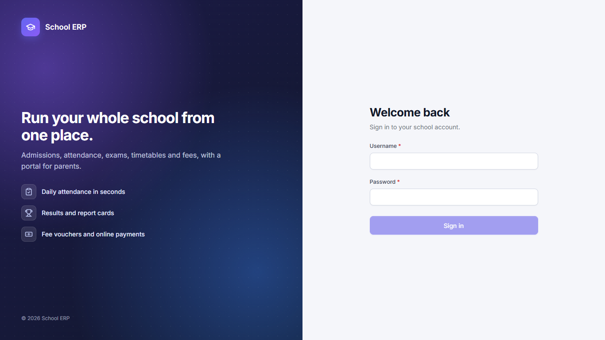
- Open the app's address in your browser. The login page opens.
- Type your Username and Password. You do not need a school code: every username is used only once in the whole app.
- Click Sign in. Staff go to the Dashboard. Parents go to the Portal.
- The first time you sign in, or after your password is reset, you must choose a new password.
If you type the wrong password many times, login stops for a few minutes. If you forget your password, ask the Admin to reset it.
Dashboard

The Dashboard is the first page after login. It shows the school's day at a glance:
- Four cards at the top: number of Students, Teachers, Attendance today (shows Closed on a holiday) and fees Collected this month.
- Fee collection: how much fee came in each month for the last six months.
- Needs attention: things to look at now, like overdue fees or transfer proofs waiting to be checked. Click a line to open that page.
- Three quick buttons at the top right: Mark attendance, Collect fee and Admit student.
- Lower down: Today's attendance and Recent admissions.
Different Logins
Every person signs in on the same login page. What they see next depends on their role: each role gets its own menu, and pages outside it cannot be opened. Staff logins are made in Administration → Users; parent logins are made from the student's page.
Which pages each staff login sees
| Menu | Page | Admin / Principal | Accountant | Teacher |
|---|---|---|---|---|
| Overview | Dashboard, My payslips, My leave | ✓ | ✓ | ✓ |
| Students | Students (list) | ✓ | ✓ | ✓ |
| Students | Attendance | ✓ | ✓ own sections | |
| Students | Monthly attendance | ✓ | ✓ | ✓ |
| Students | Promote students, Certificates, ID cards | ✓ | ||
| Academics | My timetable | ✓ | ||
| Academics | Timetable, Results | ✓ | ✓ | ✓ |
| Academics | Homework & diary, Marks entry | ✓ | ✓ own classes | |
| Academics | Exams | ✓ | ||
| Fees | All fee pages (collection, vouchers, families, transfer proofs, reminders, reports, setup) | ✓ | ✓ | |
| Finance | Payroll, Salaries, Salary advances, Expenses, Income & spending | ✓ | ✓ | |
| School | Staff, Classes & sections, Subjects, Holidays | ✓ | ✓ | ✓ |
| School | Staff attendance by month | ✓ | ✓ | |
| School | Staff attendance, Staff leave, Academic years | ✓ | ||
| Administration | Users, School profile, Audit log | ✓ |
Admin and Principal
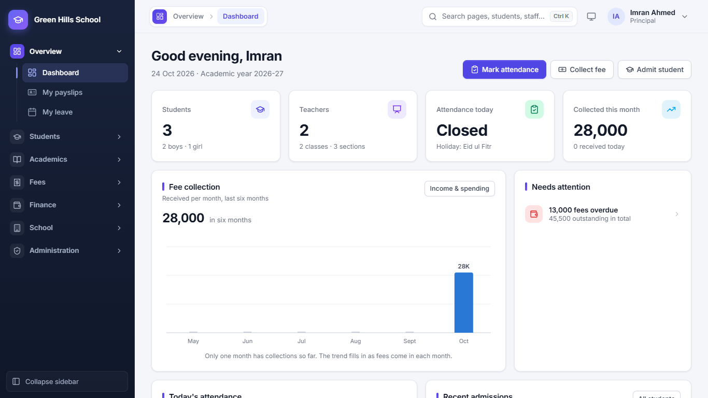
Admin and Principal see the same full menu and start on the Dashboard. They run the whole school: students, exams, fees, payroll, staff, users and settings. Use Admin for the school owner or office head, and Principal for the head teacher.
Accountant
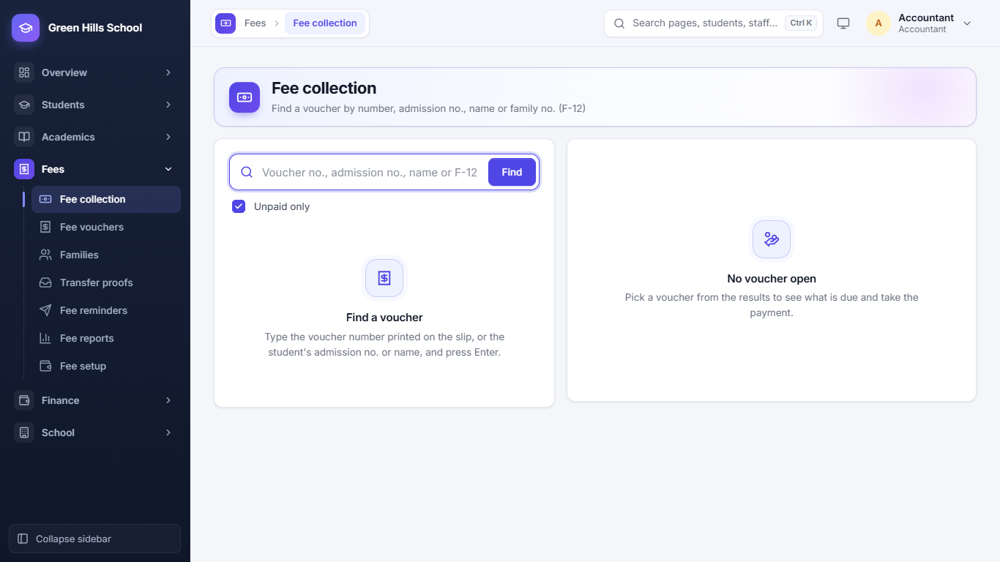
The Accountant starts on the Dashboard and works mostly in Fees and Finance: collecting fees, making vouchers, checking transfer proofs, sending reminders, payroll and expenses. They can look at students, timetables and results, but cannot mark attendance, enter marks, or open Users and the Audit log.
Teacher
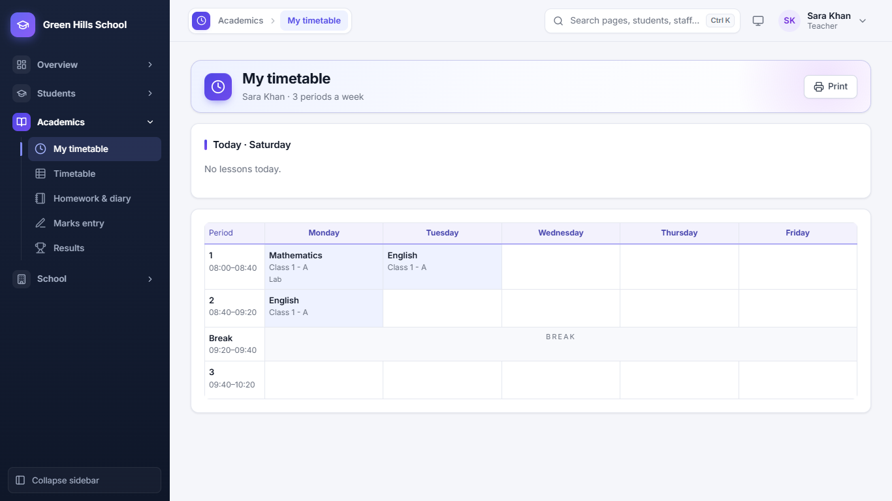
The Teacher starts on the Dashboard. My timetable shows their own lessons for the week and today. They mark attendance, enter marks and post homework only for the classes and subjects given to them; other classes do not appear. They have no Fees, Finance or Administration menu. Every staff login, including teachers, can see their own payslips and ask for leave under Overview.
Parent
A parent goes straight to the Portal (My children) and sees only their own children. See Parent Portal. One parent login can cover brothers and sisters. If the children study at different branches of a School Group, the parent can switch between branches in the Portal.
Owner (Super Admin)

The Owner has no school of their own. They see only the Schools page, where they add schools, give each school its first Admin login, switch schools on or off, and make School Groups.
Group login (several branches)
A group login can be an Admin, Principal or Accountant of the whole group. After sign-in it opens the group pages (All branches, Fees across branches, Branch transfers; Group sign-ins for Admin only). Pick a branch at the top of the sidebar to work inside it with that role's normal menu. See School Groups.
Good practice
- Give each person their own login. Do not share one login: the Audit log then shows who did what.
- When someone leaves, switch their login off in Users.
- Everyone must change the temporary password at first sign-in.
Students
Student list
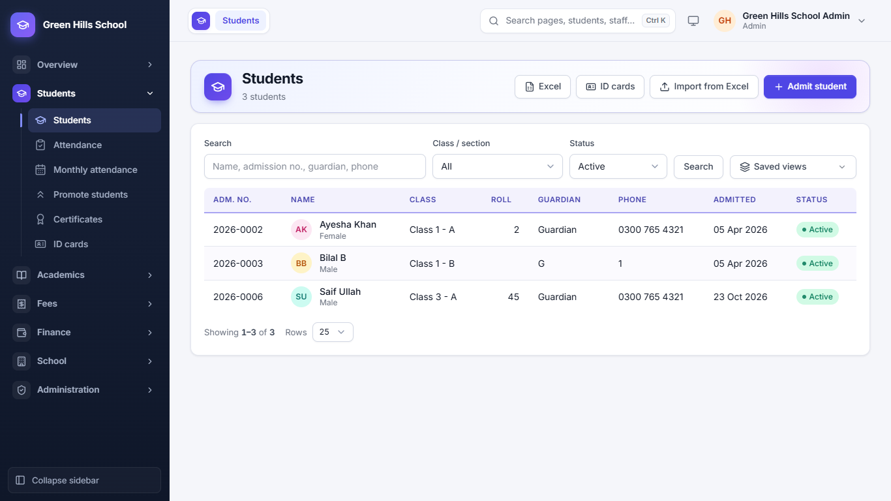
Open Students → Students. You see every student with Adm. No., Name, Class, Roll, Guardian, Phone, Admitted date and Status.
- Search by name, admission no., guardian or phone. Use Class / section and Status (Active, Left, Struck off) to narrow the list.
- Click a column heading to sort the list by that column.
- Saved views: save filters you use often. Admin and Principal can share them with other staff.
- The Excel button downloads the list as an Excel file.
Admit a new student
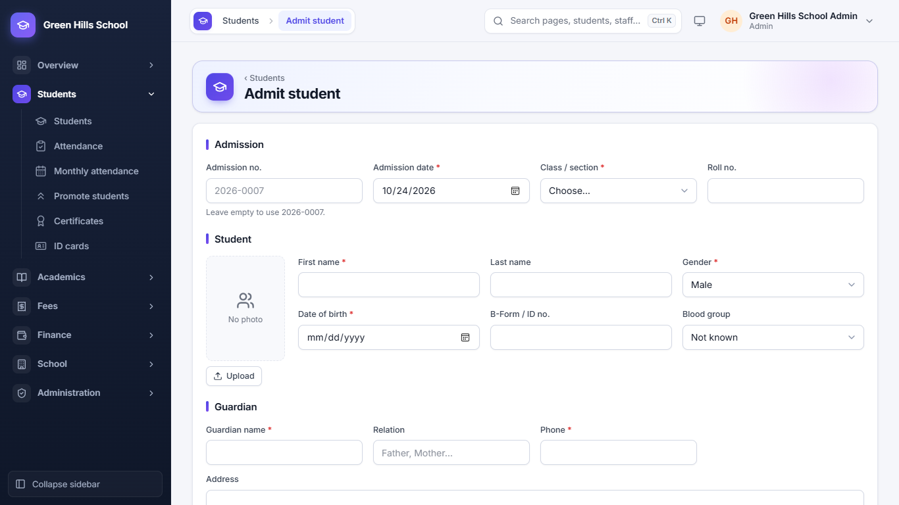
- In Students, click Admit student.
- Admission: leave Admission no. empty and the next number is used (for example 2026-0007). Fill in Admission date, Class / section and Roll no.
- Student: name, Gender, Date of birth, B-Form no. and Blood group. Click Upload to add a photo; the app crops it to passport size.
- Guardian: name, Relation, Phone and Address. Type the phone number carefully: fee reminders and absence SMS go to this number.
- If this phone already belongs to a family, the app asks if the child should join that family (for example F-12).
- Click Save.
Add many students from Excel (Import from Excel)
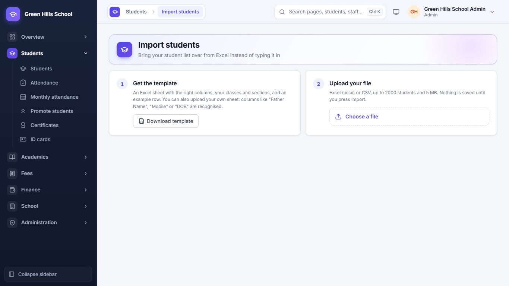
- In Students, click Import from Excel and download the Template. Its Classes sheet lists the exact class names of your school.
- Fill in the template and upload it (.xlsx or .csv).
- The Preview checks every row. Problems like a wrong date, a repeated row or a full class are shown in red.
- Fix the problems, or skip the bad rows and import the rest.
A student's page
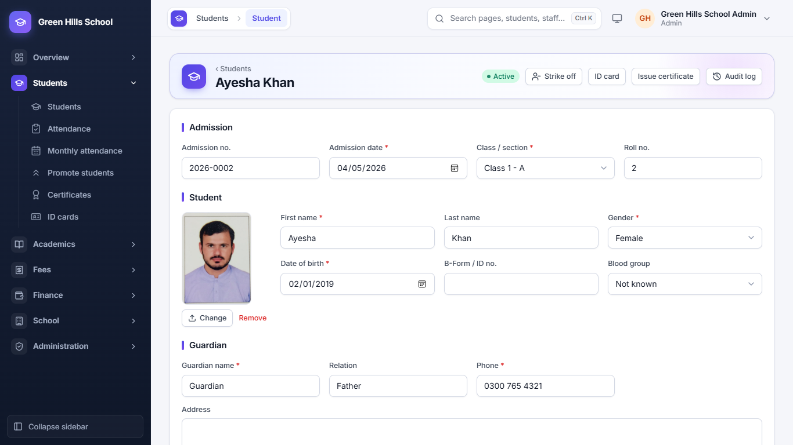
Click a student in the list to open their full record. Change any detail and click Save. Buttons at the top:
- Strike off: remove a student who does not pay or stops coming. When they come back, Readmit them; a readmission fee can be charged.
- ID card: make this student's ID card.
- Issue certificate: School Leaving, Character or Bonafide certificate.
- Audit log: who changed what in this record, and when.
The parent's Portal login is also made from this page. The guardian's mobile number becomes the username, and the app gives a temporary password. The parent must change it at first login. One login can be linked to brothers and sisters.
ID Cards
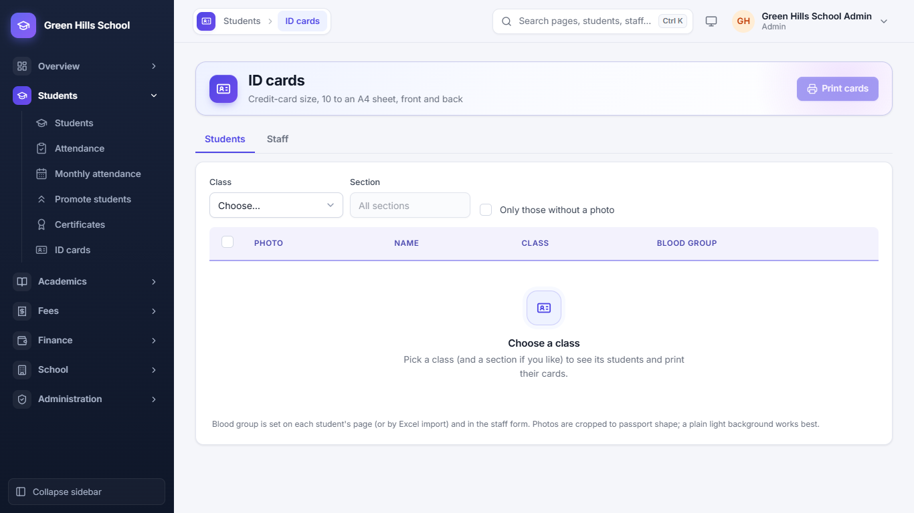
Open Students → ID cards. Choose a class, tick the students and click Print. Ten cards fit on one A4 page. Each card has the photo, blood group, school logo and a QR code. Staff cards are made here too.
Attendance and Holidays
Daily student attendance

- Open Students → Attendance.
- Choose the Class / section and the Date. All students of that section appear.
- Mark each student Present, Absent, Late or Leave, then click Save.
Parents of absent students get an SMS 15 minutes later. If you correct a mistake before then, no SMS is sent. A teacher can mark only their own sections. Attendance cannot be taken on a holiday.
Monthly attendance
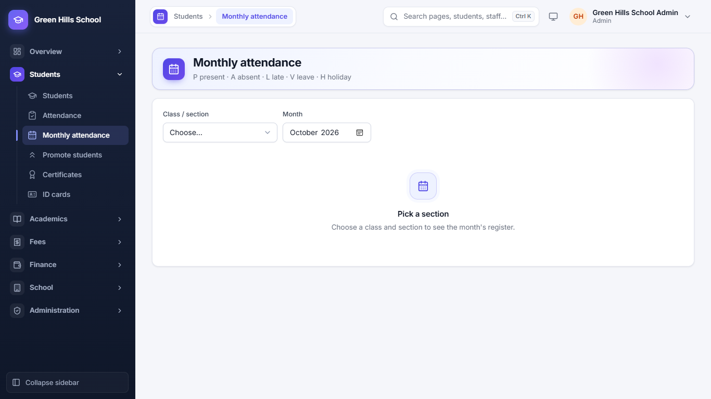
Students → Monthly attendance shows one section's whole month in a grid, with each student's total present and absent days. You can download it as Excel.
Staff attendance
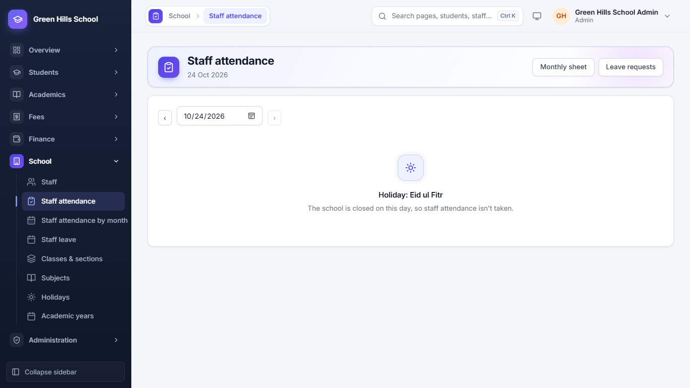
In School → Staff attendance, mark staff Present, Absent, Half day or Leave each day. Absent and Half day without approved leave are cut from pay in Payroll automatically (Absent = 1 day, Half day = half a day). Staff attendance by month shows the month's summary.
Staff leave
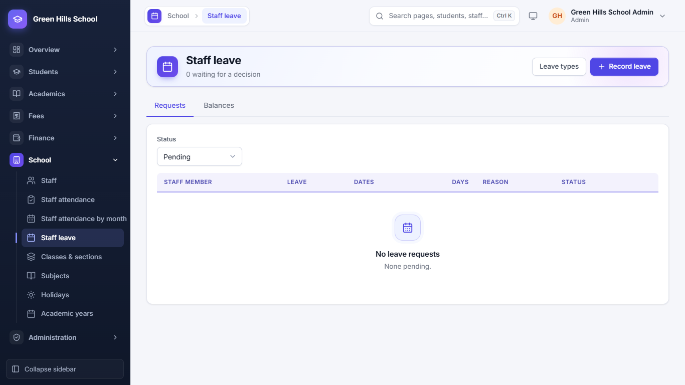
In School → Staff leave, approve or reject leave requests. Each year staff get Casual 10 and Sick 10 days. Without pay leave has no limit, but those days are cut from pay. Staff can send their own request from My leave.
Holidays
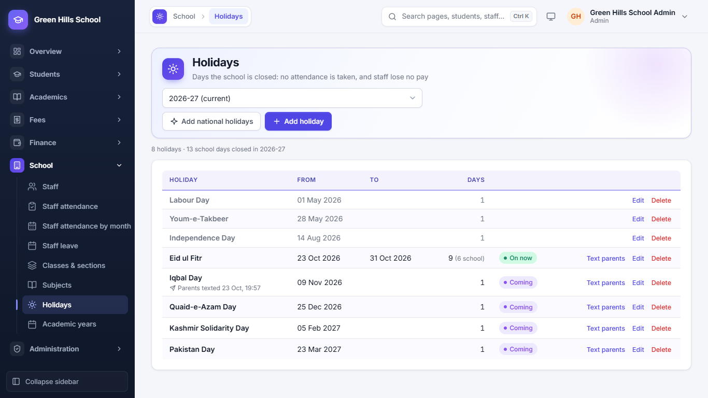
In School → Holidays, enter the days the school is closed. No attendance is taken on those days, and staff lose no pay.
- Add national holidays: adds the 7 fixed national holidays (like Labour Day, Independence Day, Quaid-e-Azam Day) in one click. Eid and Muharram dates change each year, so add them yourself with Add holiday.
- Text parents: send an SMS about the holiday to all parents. The app offers this by itself when you add a holiday that starts within 7 days.
- If an exam paper, fee due date or homework due date falls on a holiday, the app warns you.
Fees
The usual monthly order is: set fees once (Fee setup) → make the month's vouchers → take payments at the counter or from transfer proofs → send reminders to those who have not paid.
Fee setup
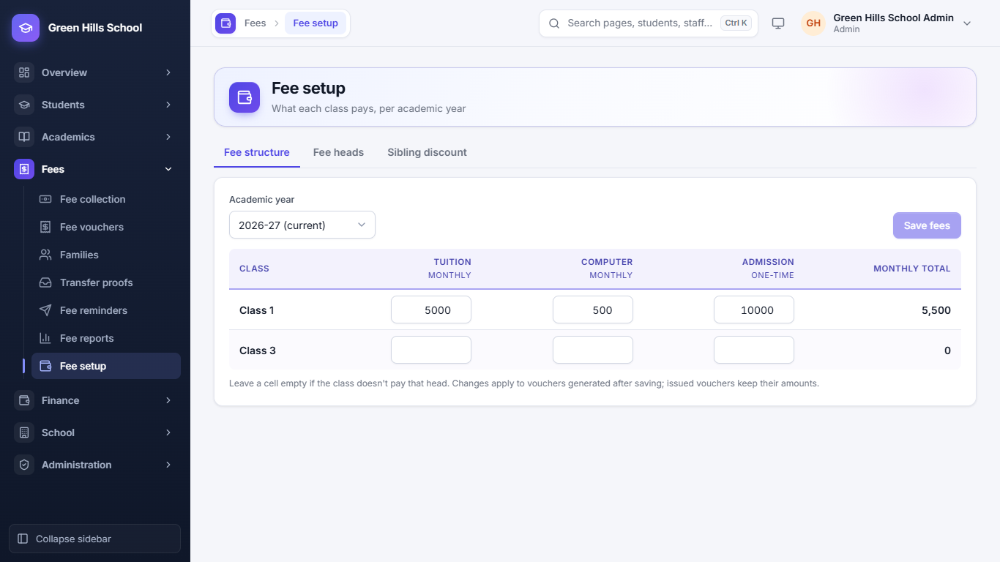
Open Fees → Fee setup. It has three tabs:
- Fee heads: the kinds of fee, like Tuition (monthly), Computer (monthly) or Admission (one-time).
- Fee structure: how much each class pays for each head in the academic year. Leave a box empty if a class does not pay that head. Click Save fees. New amounts apply only to vouchers made after saving.
- Sibling discount: younger brothers and sisters pay less. For example, the 2nd child gets 20% off tuition. If a child also has their own concession, the bigger one is used, not both.
Fee vouchers
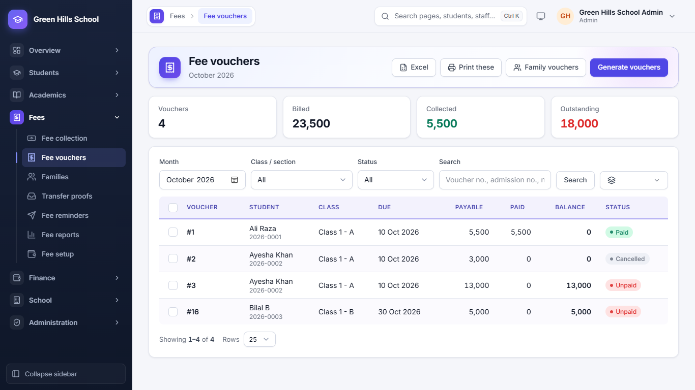
Fees → Fee vouchers shows one month's vouchers. The cards at the top show the number of Vouchers, Billed, Collected and Outstanding. Each row shows the voucher no., student, due date, payable, paid, balance and status (like Paid, Unpaid or Cancelled). Tick several vouchers to cancel them together or send reminders to them. Print these prints the vouchers in the list.
Make the month's vouchers (Generate vouchers)
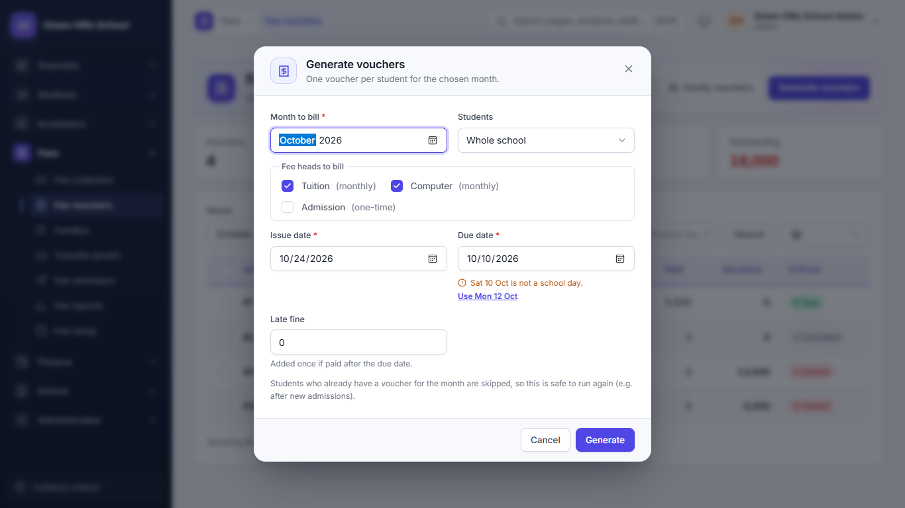
- In Fee vouchers, click Generate vouchers.
- Choose the Month to bill and the Students (whole school or one class).
- Tick the fee heads to bill. Monthly heads are ticked already.
- Enter the Issue date, Due date and Late fine. If the due date is not a school day, the app suggests the next school day.
- Click Generate. Students who already have a voucher for that month are skipped, so it is safe to run again after new admissions.
Family vouchers prints all brothers' and sisters' vouchers of one family on one slip.
Take a payment at the counter (Fee collection)

- Open Fees → Fee collection.
- Type the voucher no. printed on the slip, the admission no., the student's name or the family no. (like F-12), then press Enter.
- Pick the voucher. The right side shows what is due today, including any late fine.
- Enter the amount received and save. Print the receipt.
If you type a family no., one payment is shared across all the children's vouchers, oldest due first. The family gets one receipt (like FR-7).
Families
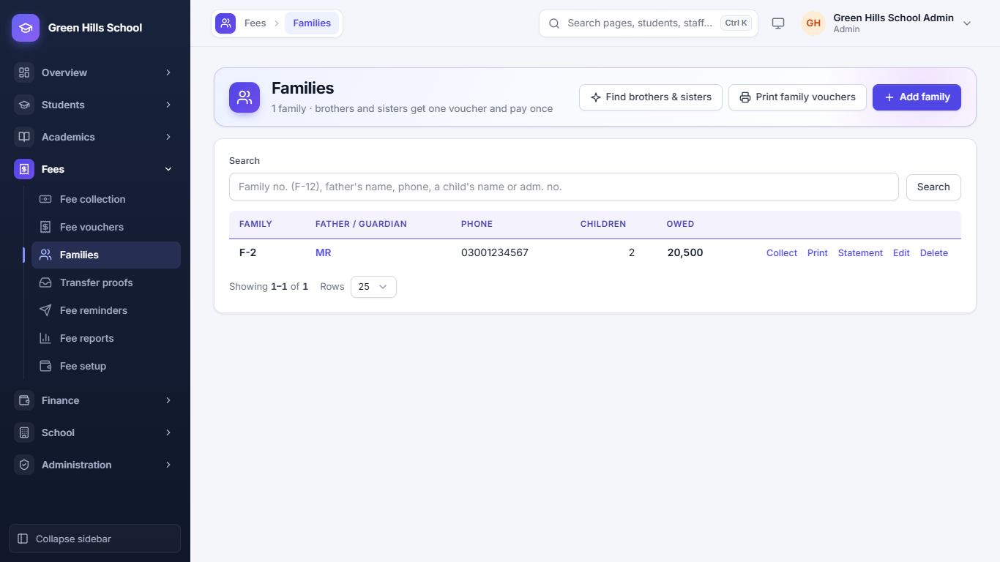
Fees → Families groups brothers and sisters. Click Find brothers and sisters: the app suggests children who share the same guardian mobile number. Each family gets a number like F-12. Statement prints a family's full fee record for the year.
Transfer proofs

Many parents pay by bank transfer, JazzCash or Easypaisa. They send the transaction ID and a photo of the receipt from the Portal. In Fees → Transfer proofs:
- Approve: the payment is saved on the voucher, with the transaction ID as the reference.
- Reject: write the reason; the parent sees it.
The parent gets an SMS either way. A red badge in the menu shows how many proofs are waiting. The school's bank and wallet accounts are entered by the Admin or Principal.
Fee reminders
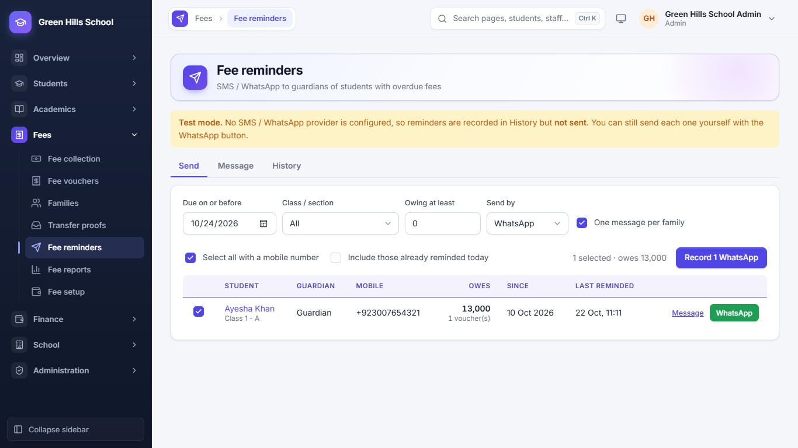
Fees → Fee reminders sends an SMS or WhatsApp message to parents who still owe fees. Check the preview first, then send. Children of one family are joined into one message, so a parent does not get several texts.
Fee reports
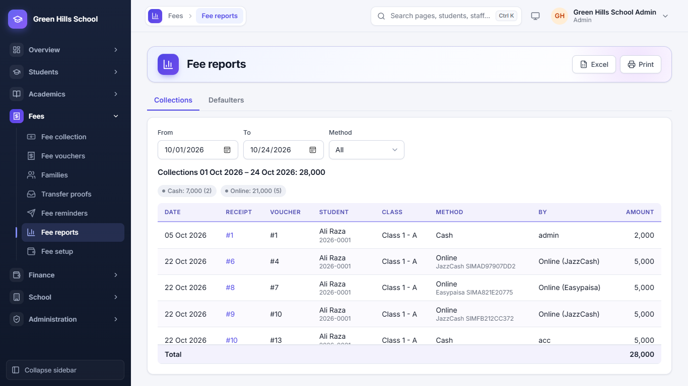
Fees → Fee reports has two tabs. Collections lists every payment between two dates (From, To), with totals for cash and online, and can be filtered by Method. Defaulters lists students who owe fees; you can filter by how many months are unpaid, and managers can Strike off several defaulters at once. Use Excel or Print at the top to download or print a report.
Exams, Timetable, Homework, Certificates and Promotion
Exams
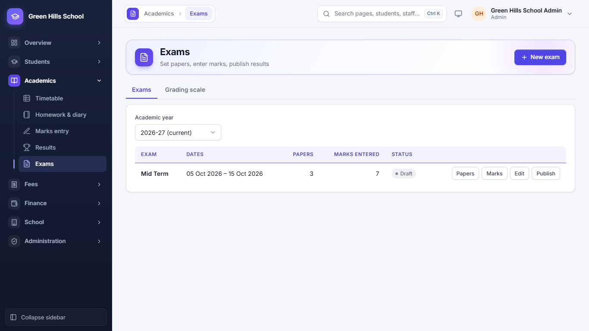
Open Academics → Exams.
- Click New exam and enter its name and dates (for example Mid Term, 05–15 Oct).
- Click Papers to add each subject's paper with its date and total marks.
- Click Marks to enter marks (or use Marks entry, below).
- When all marks are in, click Publish. Results and report cards can then be seen by staff and by parents in the Portal.
The Grading scale tab sets the grades (A+, A, B and so on) by percentage.
Marks entry
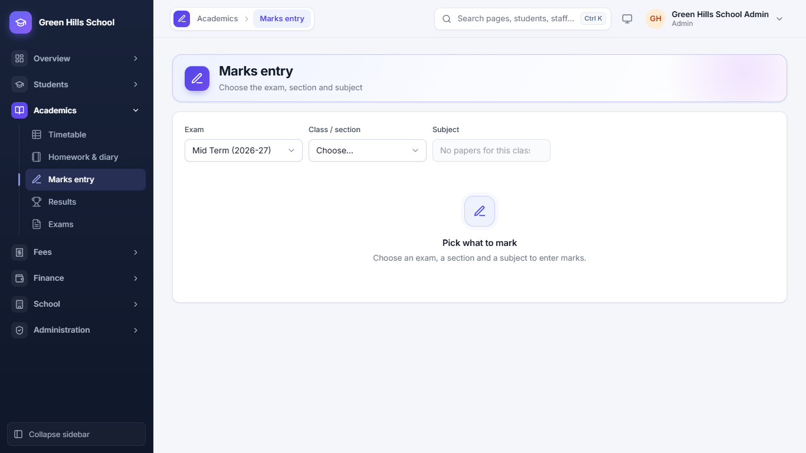
Academics → Marks entry: choose the exam, class and subject, then type each student's marks and save. A teacher sees only their own classes and subjects.
Results and report cards

Academics → Results shows each student's total, percentage, grade and position in the class. From here you can print report cards for the whole class.
Timetable
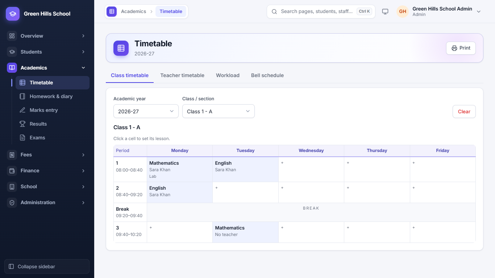
Academics → Timetable has four tabs:
- Bell schedule: set the periods and break times first.
- Class timetable: choose a class / section, then click a box to set the subject and teacher for that period. The app warns you if a teacher is already busy in another class at that time.
- Teacher timetable: one teacher's whole week.
- Workload: how many periods each teacher has.
Click Print to print a timetable. Teachers see their own timetable in My timetable.
Homework and diary
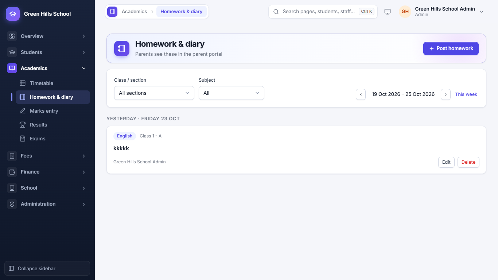
Academics → Homework & diary: choose a section and date, write the homework for each subject, and set a due date. Parents see it in the Portal's Homework tab. Teachers can post only for their own classes.
Certificates
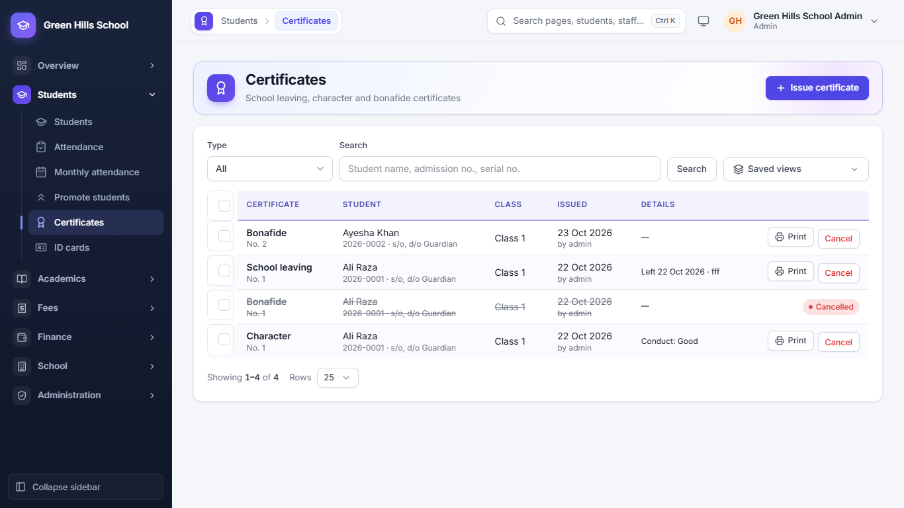
Students → Certificates lists the certificates already issued. To make a new one, open the student's page and click Issue certificate. Choose School Leaving, Character or Bonafide, check the details and print. Each certificate gets its own number and keeps the details as they were on the day it was issued.
Promote students (end of the year)
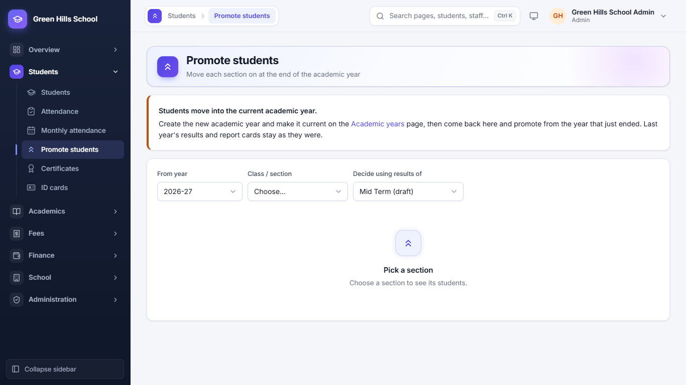
- First go to School → Academic years, create the new year and make it current.
- Open Students → Promote students.
- Choose the From year, the Class / section, and the exam whose results decide promotion.
- For each student choose Promote, Repeat class, Graduate or Leaves school. For Promote and Repeat class, pick the new section. Then save.
Last year's results and report cards stay as they were.
Staff, Payroll and Expenses
Staff
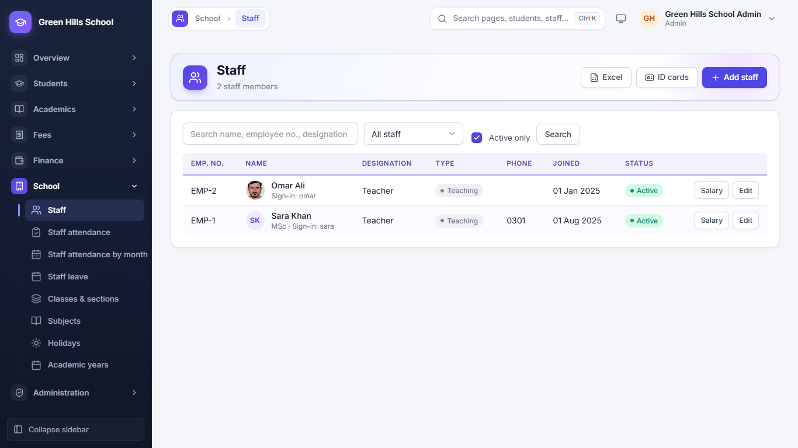
Open School → Staff. It lists everyone who works at the school: teachers and other staff (like accountant, guard or driver).
- Add staff: name, designation, type (Teaching or Non-teaching), phone, joining date and photo.
- Salary: set the person's basic pay and allowances. Payroll uses these amounts every month.
- Edit: change details, or mark the person inactive when they leave.
- A staff member who needs to use the app gets a login from Administration → Users; the list then shows their sign-in name.
Payroll (monthly payslips)

- Open Finance → Payroll and choose the month.
- Click Generate payslips. Each payslip uses the person's salary, cuts absent days (if you choose that), and takes back salary advance instalments.
- Check the list: Gross, Deductions, Net pay, Paid and Balance.
- Mark a payslip paid when the salary is given. Print slips prints the payslips.
The cards at the top show the month's payslips, net pay, amount paid and amount still to pay. Staff can see their own payslips in My payslips.
Salary advances
Finance → Salary advances: record money given to staff before payday, and how much to take back each month. Payroll takes it back by itself.
Expenses
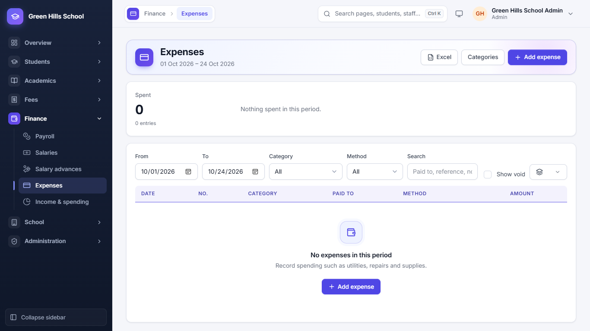
Finance → Expenses: record the school's spending, like electricity, rent, repairs or stationery. Choose a category, enter the amount and date, and attach the bill if you have it.
Income and spending
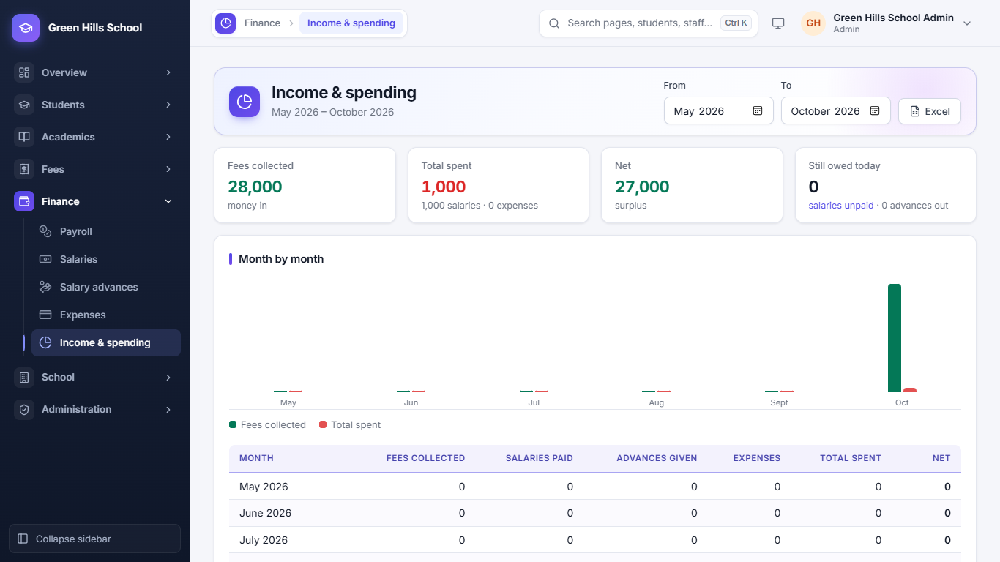
Finance → Income & spending puts fee income next to salaries and expenses, month by month, so you can see whether the school is making or losing money.
School Groups (Branches) and Transfers
An owner with several branches can join them in one School Group. The Owner (Super Admin) makes the group and puts the branches in it. Each branch still keeps its own students, fees and staff.
One login for all branches
A group login (Admin, Principal or Accountant of the group) first opens the group pages:
- All branches: students, attendance and fees of every branch side by side.
- Fees across branches: collections and defaulters of all branches together.
- Group sign-ins: make group logins (for example a head office accountant). Admin only.
To work inside one branch, pick it from the branch switcher at the top of the sidebar. The whole app then works for that branch. Pick the group again to go back.
Move a student or staff member to another branch (Branch transfers)
- Open Branch transfers and click Move student or Move staff member.
- Choose the From branch, the person, the To branch, the date and (for a student) the new class / section.
- The app shows what the student still owes at the old branch. You must agree to leave these dues there, or clear them first.
- Click Move student (or Move staff member) to finish.
What happens:
- Student: the old record is marked Left, and a new record with a new admission no. is made at the new branch. Unpaid vouchers for months after the move are cancelled at the old branch. The photo is copied.
- Parent login: the parent's Portal login moves with the child. If a brother or sister stays at the old branch, the parent can see both branches and switch between them in the Portal.
- Staff: the old record becomes inactive and stops being a class teacher. Their login and salary move to the new branch. A teacher who still has lessons on the old branch's timetable cannot be moved until those lessons are given to someone else.
The student's page at both branches shows a note about the transfer.
Parent Portal
Parents sign in on the same login page with the username and password the school gives them (usually the guardian's mobile number). At first login they must choose a new password.
My children
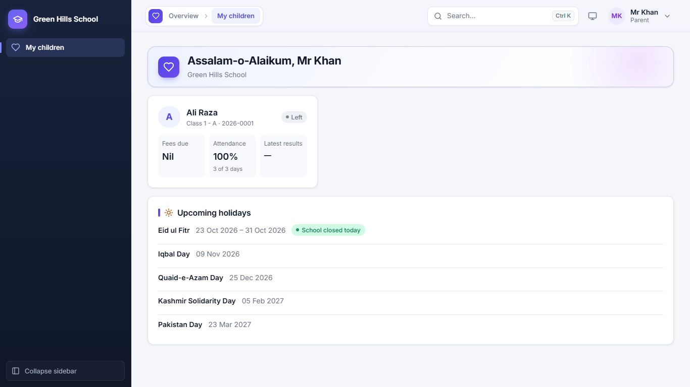
The first page shows a card for each child: class, admission no., Fees due, Attendance (%) and Latest results. Upcoming holidays are listed below. If the family has children at other branches of the same group, a box shows them with an Open button to switch branch.
A child's page

Click a child's card to open their page. It has five tabs:
- Fees: amount Due now and Paid so far, every month's voucher with its status, and past payments. Click Voucher to see or print it.
- Attendance: the month's present, absent, late and leave days.
- Homework: homework set by the teachers, with due dates.
- Results: exam results and report cards (after the school publishes them).
- Timetable: the class's weekly timetable.
Paying fees by bank transfer, JazzCash or Easypaisa
- Pay the fee to one of the school's accounts (shown in the app).
- On the voucher, click I've paid.
- Choose the account you paid into, type the transaction ID (TID) and upload a photo of the receipt.
- The school checks it. When it is approved, the voucher shows Paid and the parent gets an SMS. If it is rejected, the reason is shown.
A parent with two or more children can use Pay for all your children to send one proof for all of them. Pay online appears only if the school has turned on an online payment gateway.
On a mobile phone

The portal works on any phone browser. The menu folds away; tap the menu button at the top to open it.
Users, Audit Log, School Setup and Common Questions
Users
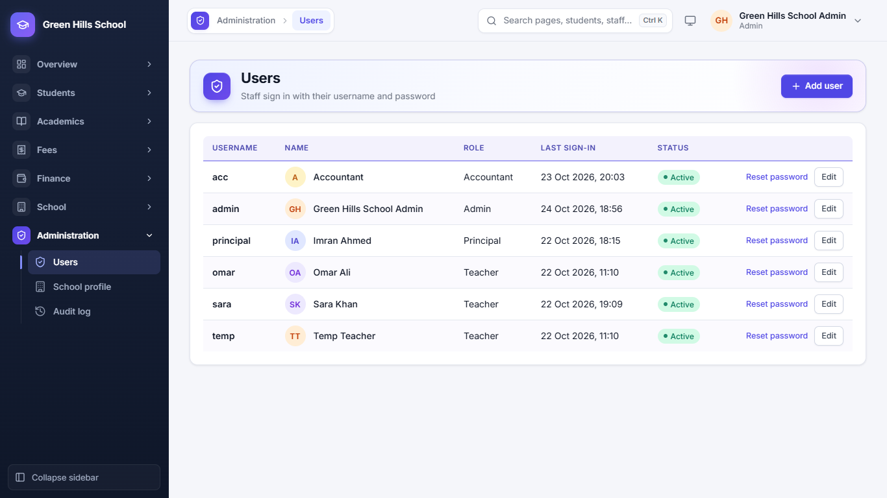
Administration → Users is where the Admin or Principal makes logins for staff. Enter the name, username, role (Admin, Principal, Accountant or Teacher) and a password. A teacher's login is linked to their staff record so they see only their own classes. You can reset a password or switch a login off here. Parent logins are made from the student's page, not here.
Audit log
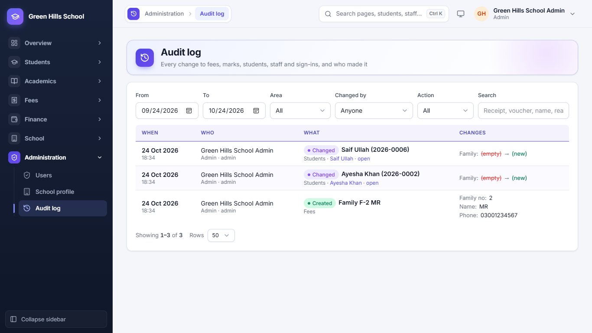
Administration → Audit log records every change to fees, marks, students, staff and sign-ins: who did it, when, and the old and new values. Filter by date, Area, Changed by and Action, or search for a receipt, voucher or name.
School setup
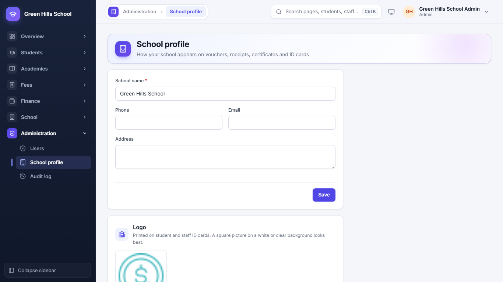
Do these once when you start, and again at the start of each year:
- Administration → School profile: school name, phone, email, address and logo. These are printed on vouchers, receipts, certificates and ID cards.
- School → Academic years: add the year (for example 2026-27) and make it current.
- School → Classes & sections: add classes (Class 1, Class 2 …) and their sections (A, B) with how many students fit.
- School → Subjects: add the subjects taught.
- School → Staff, then Fees → Fee setup, then admit students.
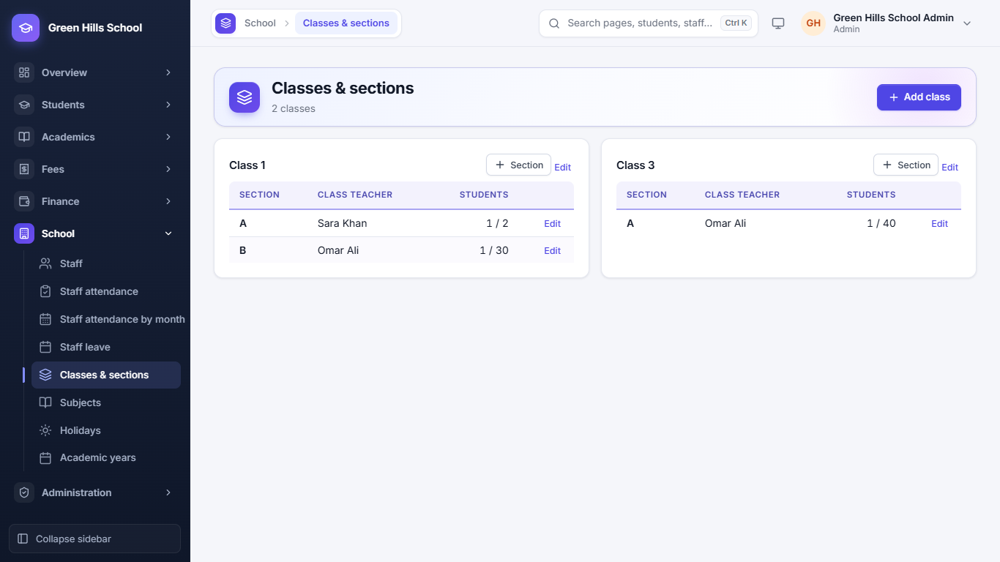
Schools (Owner only)
The Owner (Super Admin) sees the Schools page. Here they add a new school with its first Admin login, switch a school on or off, and put branches into a School Group.
Common questions
- I forgot my password. Ask the Admin to reset it. Parents ask the school office.
- A parent says they get no SMS. Check the guardian phone number on the student's page.
- Can I change a fee after vouchers are made? Change it in Fee setup. Old vouchers keep their amounts; new vouchers use the new amount.
- I made the vouchers twice. That is fine: a student who already has a voucher for that month is skipped.
- A student was marked absent by mistake. Correct it within 15 minutes and the parent gets no SMS.
- Who changed this record? Open the Audit log, or the Audit log button on the student's page.
- Can I use it on my phone? Yes, every page works in a phone browser.